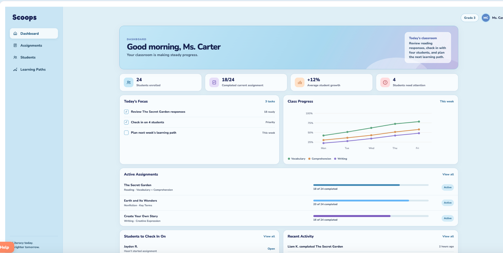

01 · Product Design Case Study
Scoops
A children’s literacy and creative-expression platform that began as my senior capstone and has continued to grow with me after graduation.
- ROLE
- Product Designer
- CONTEXT
- University capstone + ongoing product
- FOCUS
- UX/UI, interaction, systems
- TOOLS
- Figma, HTML, CSS, JavaScript


The design challenge
Scoops started with a pretty simple idea: a social platform for kids that could feel creative and fun while still being educational and safe. My senior capstone gave me the space to turn that idea into a real product. The first version was much more child-facing, centered around reading, learning, creating, and interacting with friends.
As I kept developing Scoops after graduation, the product started asking for more than a good child-facing interface. Parents and teachers needed completely different information, and the experience also had to remember where a reader was in setup, learning, and progress instead of treating every screen like a separate moment.
For young readers, the main actions needed to stay obvious and predictable. Reading, learning, creating, and social features should feel connected without making the interface feel like school software.
For adults, the goal became giving them the setup, progress, and oversight they need without letting those tools take over the experience meant for the child.
From map to product
The project started with mapping the main experience in Figma, but once I began coding it, building became another part of the design process.
The early prototype helped me establish the main areas of Scoops—Home, Learn, Create, Friends, profile, and the lesson paths. Once I started turning those screens into a working front end, I began noticing questions that were much easier to ignore in Figma. I had to think about what an empty library looks like, where progress should live, how an adult enters the product, and what should happen before a child begins a learning path.


The earlier screens stay in this case study because they show where the project started. The current version looks very different, and that difference matters because it shows how much the thinking changed once the product had to actually work.
One product, three different users
The original Scoops concept was built mostly around the child. As the platform grew, that stopped being enough.
A child needs to know where to read, learn, create, and connect with friends. A parent or guardian is more focused on setup, progress, and what their child is doing. A teacher needs a much wider view of assignments, classroom progress, learning paths, and which students may need attention.
Keeping all of that inside the same navigation would have been simpler to build, but it would have mixed classroom and progress-management tools into an experience that was supposed to feel straightforward for a child. The better solution was to separate the roles while keeping the visual system familiar across all three.
The decision: separate entry points and tools by role instead of asking every user to move through the same interface.
The goal: make Scoops feel like one connected product without giving every person the same level of complexity.



What changed once I built it
Moving from Figma into HTML, CSS, and JavaScript changed the way I looked at the design.
A screen can look finished in Figma while still leaving a lot of questions unanswered. Once I started building Scoops, I had to deal with drafts, empty libraries, progress states, preview behavior, account roles, and the transition from a diagnostic into a learning path. I also had to think more seriously about reusable pieces because every new feature needed to feel like it belonged to the same product instead of becoming its own separate screen.
A problem the prototype did not show: the diagnostic worked as a straightforward sequence in Figma, but in the working product a refresh could send the reader back to the beginning. That made it clear that the diagnostic could not just be treated like another page.
What changed: I had to think about the reader's state across the larger journey—whether they were new, in the middle of setup, had already completed the diagnostic, or were ready to return to their learning path.
This was one of the moments where coding became part of the design process. The problem was technical, but the effect was entirely about the user experience: returning to Scoops should feel like continuing where you left off, not starting over.

See where Scoops is now.
The live site shows the working front-end experience I am continuing to develop. Scoops is still an ongoing product, and parts of the teacher experience, persistence, and real-user validation are still being refined rather than presented as finished.
What I learned
One of the biggest things Scoops taught me is that product design does not stop once a Figma prototype looks finished.
Building the product made me think more carefully about how visual design, interactions, content, and code affect each other. I stopped looking at each screen as its own thing and started thinking more about how Scoops could continue growing without becoming confusing or inconsistent.
If Scoops continues developing, the teacher experience is one of the main areas I want to keep building out next. Testing the product with children, parents or guardians, and educators would also help show where the navigation, diagnostic, story creation, and progress features make sense in practice and where they still need work.